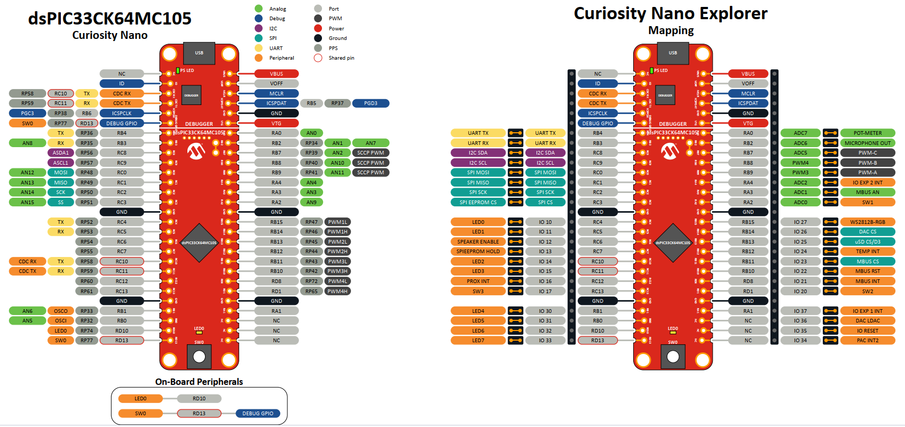
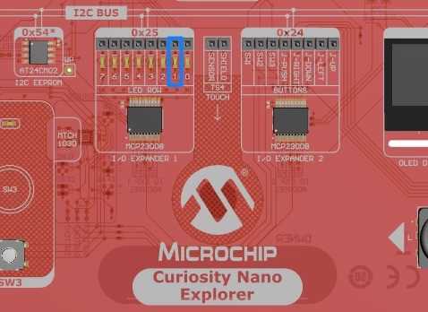
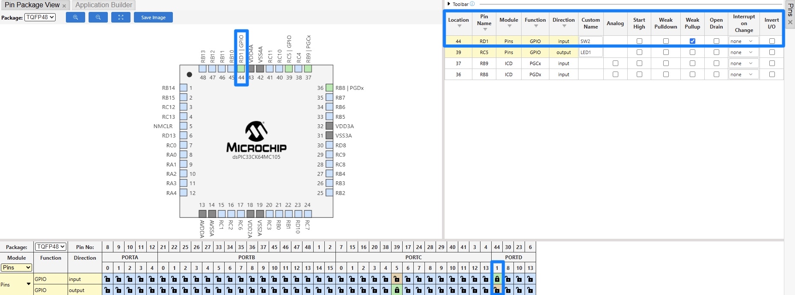

Introduction
Contexte
Décrivez ici le contexte du document. Pourquoi ce document existe-t-il ? Quel est le problème ou l’opportunité adressé ?
Note : Ce bloc est une note ou un avertissement important. Utilisez
>pour les citations ou blocs callout.
Objectifs
Ce document a pour objectifs :
- Objectif 1 — Description concise de ce qui est visé
- Objectif 2 — Description concise
- Objectif 3 — Description concise
Périmètre
| Dans le périmètre | Hors périmètre |
|---|---|
| Élément A | Élément X |
| Élément B | Élément Y |
| Élément C | Élément Z |
Interlocuteurs
| Rôle | Nom | Responsabilité |
|---|---|---|
| Commanditaire | {{recipient_name}} | Validation finale |
| Auteur | {{author}} | Rédaction & livraison |
| Relecteur | À définir | Relecture technique |
Document body
How to create a project on MPLAB
GPIO Project
In this section you will implement everything to setup a GPIO communication with input and output tools.
Goals
In this project you will:
Make a LED blink
Turn the LED on while you hold a switch
Use the switch to turn the LED on and off
The tools involved are LED1 and SW2.
Physical setup

Figure 1 — Pin mapping of the dsPIC33CK64MC105 on the Curiosity Nano Explorer board. The left side shows the microcontroller’s physical pins; the right side shows how they are exposed on the Explorer board connectors. To follow this tutorial, place a jumper linking the LED1 pin to IO11, and another linking SW2 to IO20.Once the jumpers are in place, you can move on to the software setup.
Setting up on MPLAB
1. Make a LED blink
First, we want to control LED1, which you can find on the board here:

To drive this LED you need to configure pin RC5 as a digital output. Open the MCC Melody interface by clicking the blue MCC icon, then apply the following configuration:
You can either click on the pin directly in the chip view (top-left
corner) and select GPIO_OUTPUT, or use the pin table at the
bottom of the screen and enable output on RC5. Either way, rename the
pin to LED1 to keep your code readable — select Project
Resources on the left, then click Generate.
This modifies two files — pins.h and pins.c
— by declaring and implementing a set of macros you will use in
main.c.
Each macro maps the human-readable name LED1 to one of
three hardware registers that control pin RC5:
_LATC5(LATch register) — the value the PIC drives on the output pin (0 or 1)._TRISC5(TRIState register) — pin direction:0= output,1= input._RC5(PORT register) — the actual logic level present on the pin.
The generated macros in pins.h wrap these registers:
// pins.h — macros for LED1 (mapped to pin RC5)
// drive pin HIGH
#define LED1_SetHigh() (_LATC5 = 1)
// drive pin LOW
#define LED1_SetLow() (_LATC5 = 0)
// invert current output level
#define LED1_Toggle() (_LATC5 ^= 1)
// read actual pin level
#define LED1_GetValue() _RC5
// set pin as input
#define LED1_SetDigitalInput() (_TRISC5 = 1)
// set pin as output
#define LED1_SetDigitalOutput() (_TRISC5 = 0)
// applies the full pin configuration from MCC
void PINS_Initialize(void); Back in main.c, making the LED blink is
straightforward:
#include "mcc_generated_files/system/system.h"
#include "mcc_generated_files/system/pins.h"
// Fosc / 2 — required by libpic30 delay macros
#define FCY 100000000UL
#include <libpic30.h>
int main(void)
{
SYSTEM_Initialize();
while(1)
{
// wait half a second
__delay_ms(500);
// turn LED on (active low)
LED1_SetLow();
__delay_ms(500);
// turn LED off
LED1_SetHigh();
}
}Now that you understand what each macro does, you can simplify this
with Toggle:
int main(void)
{
SYSTEM_Initialize();
while(1)
{
__delay_ms(500);
LED1_Toggle();
}
}The LED should now blink every half second.
2. Hold a switch to turn the LED on
Go back to the MCC Melody pin manager and add RD1 as
a digital input — this is where SW2 is connected (refer to the mapping
diagram if needed). Name it SW2, tick Weak Pullup,
then click Generate.

The weak pull-up keeps the pin at a logic HIGH when the button is not
pressed. When you press the button, it connects the pin to ground,
pulling it LOW. This is why the condition below checks for
== 0.
int main(void)
{
SYSTEM_Initialize();
while(1)
{
// button pressed → pin pulled LOW
if(SW2_GetValue() == 0) {
// turn LED on
LED1_SetLow();
}
else {
// turn LED off
LED1_SetHigh();
}
}
}3. Toggle the LED with a switch press
You now have all the building blocks. The idea is to combine the delay from step 1 with the button read from step 2: every loop iteration, wait a short time, then check the button and toggle if it is pressed.
int main(void)
{
SYSTEM_Initialize();
while(1)
{
if(SW2_GetValue() == 0) {
LED1_Toggle();
}
}
}This works — but not reliably. The issue is a timing mismatch between the loop and the human finger.
The loop runs every 50 ms. A typical button press lasts 200–400 ms.
During that window, the loop executes the Toggle call
4 to 8 times, so the LED flickers unpredictably instead
of cleanly switching state.
The diagram below illustrates this: a single press lasting ~240 ms is seen as four separate LOW readings by the loop, producing four unwanted toggles.

This is called a debouncing problem. It can be solved properly using:
a hardware timer to sample the button at a fixed rate and require a stable state before acting, or
interrupts, which let the MCU react the instant the pin changes rather than polling it in a loop.
Both approaches are covered in the next sections.
Conclusion & Prochaines Étapes
Synthèse
Résumez ici les points clés du document en 3-5 phrases maximum. Cette section doit être lisible indépendamment du reste.
Recommandations
- Recommandation prioritaire — Explication courte et actionnelle
- Deuxième recommandation — Explication courte et actionnelle
- Troisième recommandation — Explication courte et actionnelle
Prochaines Étapes
| Étape | Responsable | Échéance | Statut |
|---|---|---|---|
| Étape 1 | {{author}} | À définir | ⏳ En attente |
| Étape 2 | {{recipient_name}} | À définir | ⏳ En attente |
| Étape 3 | Équipe | À définir | ⏳ En attente |
Contact
Pour toute question relative à ce document :
- {{author}} — {{author_email}}
- {{sender_company}} — {{sender_website}}
Document préparé par {{sender_company}} pour {{recipient_company}} — {{date}} — Version {{version}}